如果没有弄错的话，我们日常所说的对称（symmetry）有两层含义：其一，“对称的”，指比例适当、平衡良好；其二，“对称性”，指多个部分构成整体所遵循的协调性。美与对称紧密相连，因此，雕塑的和谐完美为古人所称道；写下了关于比例的著作并流传后世的波利克里托斯（Polykleitos）采用了这个词；丢勒跟随他的脚步，定下了一套人体比例标准。[1]从这层意义上讲，这一概念绝不局限于空间物体；其同义词“和谐”（harmony）更多地指的是声学和音乐方面而非几何上的对称。Ebenmass是希腊语symmetry一个很好的德语同义词；因为它还有“居中程度”的含义。根据亚里士多德（Aristotle）的《尼各马可伦理学》（Nicomachean Ethics），有德之人应在行动中努力达到这一状态，而盖伦（Galen）在《论气质》（De temperamentis）一书中将其描述为到两个极端等距的一种思想状态：σύμμϵτρov Öπϵρ Éκατρoυ τώv äκρωv'απÉχϵι。
天平的形象让人自然联想到现在日常所说的“对称”的第二层含义：左右对称（bilateral symmetry）。高等动物的身体结构显然具有这种对称性，特别是人体。左右对称完全是一种几何上的属性，与对称的第一层含义的模糊不清相反，这层含义是一种绝对精确的概念。一物体，一空间构型，如果在平面E的反射作用下回归自身，则称其相对于平面E是对称的。取垂直于E的任意直线l及l上的任意一点P，都存在唯一一点P'到平面的距离与P相同但位于平面E的另一侧（图1）。只有当P位于平面E上时，P才与P'重合。
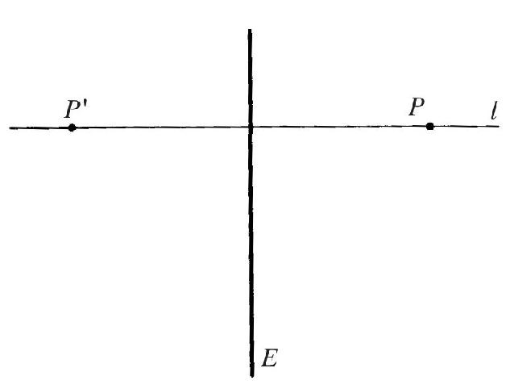
图1
关于平面E的反射是空间到自身的映射（mapping）S：P→P'，即将任意一点P变换为关于平面E的镜像P'。建立起将任意一点P与镜像P'关联起来的规则，就定义了一种映射。再举一例：绕竖直轴旋转30°，就把空间中的任意一点P变换到镜像P'，定义了一种映射。如果一个构型绕轴l的任意旋转都回归自身的话，则称该构型具有旋转对称性（rotational symmetry）。像反射、旋转这样的操作都是对称的几何概念，左右对称就是其中第一种对称。平面上的圆、空间中的球，因为具有完全的旋转对称性，被毕达哥拉斯学派（Pythagoreans）视为最完美的几何构型；亚里士多德认为天体是球形的，因为任何其他形状都会有损它们的天赋完美性。正是基于这一理念，一首现代诗[2]才把上帝称为“伟大的对称”：
对称，狭义地定义它也好，宽泛地定义它也罢，千百年来它都是人们试图借以理解并创造秩序、美和完美的一种概念。
本讲我们将按如下顺序讲述：首先我会详细探讨一下左右对称，并探讨它在艺术、有机和无机自然界中所扮演的角色。然后我们将沿着前述旋转对称的方向逐步扩展这一概念，先是局限在几何学的范围，之后通过数学抽象的过程再突破这些局限。最终得到具有更一般性的数学概念——隐藏在对称中的所有表现和应用之后的柏拉图概念。从某种意义上说，这是探讨所有理论知识的典型程序：我们从一些普通但模糊的原则（对称的第一层含义）出发，然后找到一个可以赋予该概念具体而精确的意义的重要事例（左右对称），由此出发更多地在数学构造和抽象而非哲学臆想的指导下，再次进行一般性拓展；运气好的话我们会得到一个至少像最初那个一样普适的概念。此时它可能已经失去了很多情感上的吸引力，但在思想领域获得了等量或更多的统一力量，而且是精确的，不是模糊的。
我用著名的希腊雕塑（公元前4世纪）——《祈祷男孩》（图2）——来开启关于左右对称的讨论，让你感受到这类对称在生活和艺术中的重要性，就像在标志中的重要性一样。或许有人会问，对称的美学价值是否依赖于它在生命中的价值：艺术家是否发现了大自然依据某种内在规律赋予众生命的那种对称性，之后再将大自然呈现出来的但并不完美的对称性予以复制并完美化？抑或对称的美学价值来自于其他方面？
我和柏拉图一样，倾向于认为数学概念是二者的共同起源：大自然所遵循的数学定律是大自然中对称性的起源，优秀艺术家对数学概念的直观认知是艺术中对称性的起源。不过我也承认，在艺术世界里，人体所呈现出的左右对称性也额外刺激了艺术家的对称意识。
在所有的古文化中，苏美尔人似乎对严格的左右对称或纹章对称（heraldic symmetry）拥有特别的兴趣。公元前2700年前后统治拉格什城（Lagash）的恩铁美那王（King Entemena）有一只著名的银瓶，瓶上有狮头鹰图案，鹰面朝观察者展开双翅，双爪各抓一只侧身的雄鹿，而雄鹿的面部则遭到一只狮子的攻击（上面图案中的雄鹿在下面的图案中换成了山羊，见图3）。鹰的严格对称性向其他动物延伸，其他动物只有出现双份才能保持对称性。之后不久，鹰就有了两个头，分别朝向左右两侧，对称性原则完全压倒了真实摹写大自然的原则。之后，这种纹章设计为波斯、叙利亚以及后来的拜占庭所继承，第一次世界大战之前的任何人都会记得沙俄和奥匈帝国军服上的双头鹰图案。
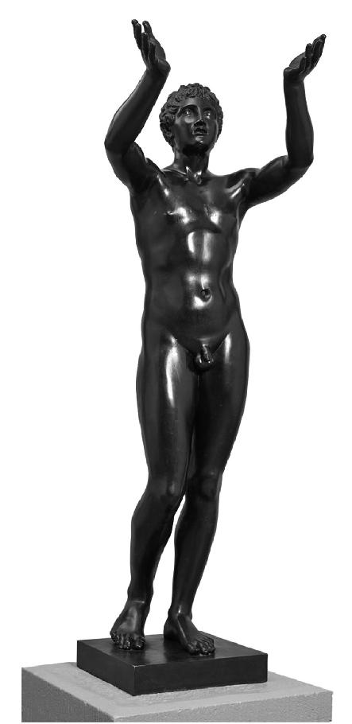
图2
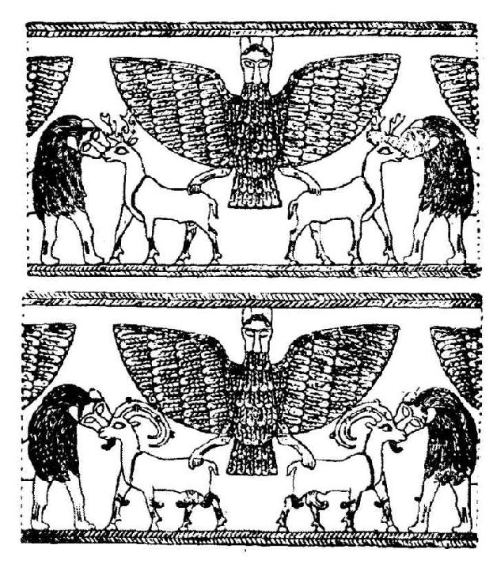
图3
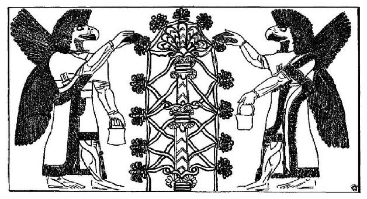
图4
现在来看另一幅苏美尔人的图案（图4）。两个鹰头男人近乎对称但并不完全对称，为什么？平面几何里相对于竖直线l的反射也可以通过在空间里把平面绕轴l旋转180°来实现。注意他们的手臂，你会发现这两个怪人可以通过这样的旋转回归彼此；手臂在空间上的重叠使得平面画不再具有左右对称性。不过创作者为了强调左右对称性，让两人都半朝向观察者，并对两人的脚和翼做了安排：左侧那人的右翼下垂，右侧那人的左翼下垂。
巴比伦的圆柱形印石上的图案通常具有左右对称性。我记得是在前同事恩斯特·赫兹菲尔德（Ernst Herzfeld）的藏品中见到的这些样品，是神的侧面像，出于对称性考虑，把神的躯体水牛状的下半部分而非脑袋做了对称双份处理，从而就有了四条而非两条后腿。基督教时代的人们可能见过描摹圣餐情形的图案，类似于这只拜占庭圣餐碟（图5），上面两个对称的基督面对着他们的门徒。不过，这里的对称是不完全的，而且显然超出了普通意义，因为一侧的基督在分面包，另一侧的基督在倒红酒。
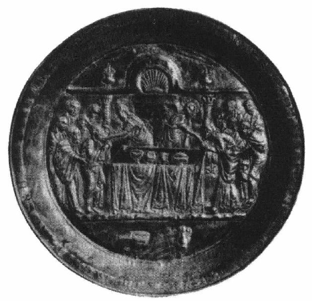
图5
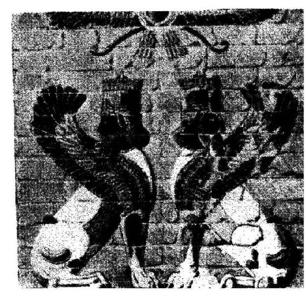
图6
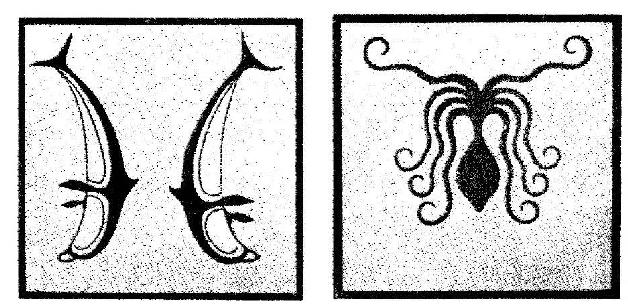
图7
我要在苏美尔和拜占庭之间加入波斯：这些上了釉的斯芬克斯（图6）来自马拉松时代建造于苏萨城（Susa）的大流士宫。穿过爱琴海我们在梯林斯（Tiryns）的中央大厅发现了这样的地板样式（图7），成于后希腊时代的公元前1200年前后。深信历史连续性和依赖性的人会把这些美丽的海洋生物（海豚和章鱼）图案追溯至克里特岛的米诺斯文化，把左右对称性追溯至来自东方的影响力，比如上例中的苏美尔人。两千年后我们还能看到这种影响力，比如11世纪意大利托切罗（Torcello）的圆屋顶里圣坛上的这幅牌匾（图8）。在基督教中，很久以来从藤叶中的竖井里饮水的孔雀就是不朽的象征，而结构上的左右对称则具有东方特色。
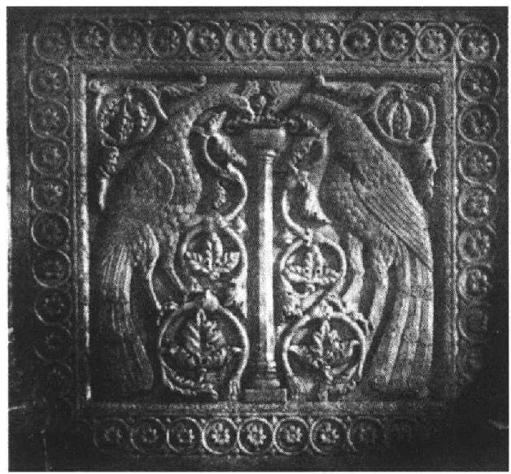
图8
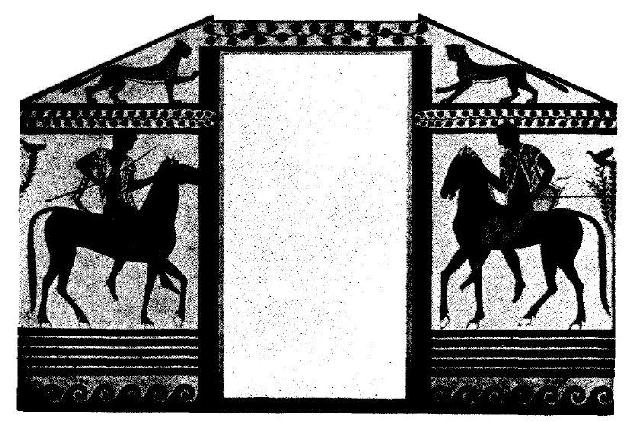
图9
与东方的艺术相反，西方的艺术像生活自身一样，往往会减缓、放松，甚至破坏严格的对称性。但是，不对称并不仅仅意味着缺乏对称性。甚至在不对称的设计中，人们也会觉得对称才是准则，只不过是受了非正规特色的影响才偏离了对称。我觉得，科尔内托（Corneto）特里克利尼姆（Triclinium），著名的伊特鲁里亚人（Etruscan）墓中的骑士图（图9）就是一个很好的例子。前面已经提到过两个基督分别发放面包和红酒的图像了。西西里岛蒙雷阿莱（Monreale）大教堂镶嵌的《耶稣升天图》（Lord’s Ascension，图10，成于12世纪）中，中间的两位天使护卫玛利亚的部分具有完美的对称性。[下一讲我们会讨论到镶嵌图上方和下方的装饰带。]拉文纳市（Ravenna）圣阿波利纳尔（San Apollinare）教堂里一幅更早的镶嵌画（图11）呈现出的对称性更不严格，基督两边是一个天使仪仗队。在蒙雷阿莱的镶嵌画里，玛利亚对称地抬起了双手，呈祈祷姿势；而这幅画里的天使仪仗队都只端着右手。下面这幅来自威尼斯圣马可（San Marco）教堂的拜占庭式浮雕圣像（图12）里的对称性就更明显一些。这是一幅祈祷像，当然，在上帝即将做出最终审判时两侧祈求怜悯的祈祷者不可能是彼此的镜像；因为上帝右侧站的是圣母玛利亚，左侧站的是施洗约翰。或许你会把耶稣受难图中十字架两侧的玛利亚和福音传播者约翰也视为破缺的对称。
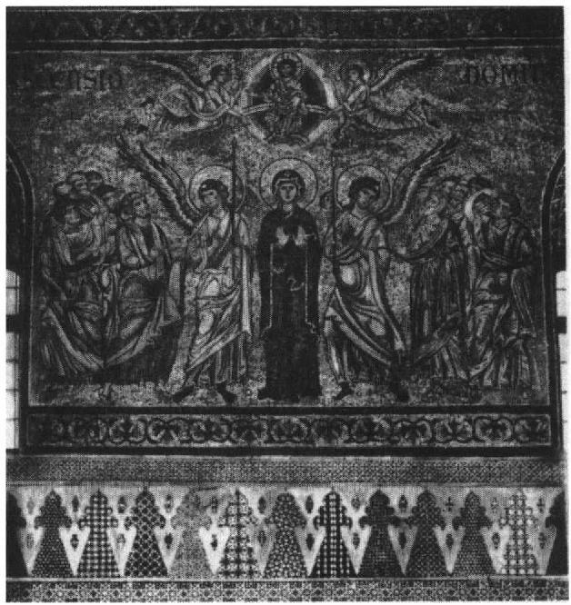
图10
显然，这里我们触及问题的本质了，左右对称的精确几何概念开始化解为模糊的均衡概念——平衡的设计，我们也是由此展开讨论的。达格伯·弗赖（Dagobert Frey）在《论艺术中的对称问题》[3]一文中写道：“对称意味着静止和约束，非对称意味着运动和放松；对称意味着秩序和规律，非对称意味着任意和随机；对称意味着刻板和限制，非对称意味着活力、玩乐和自由。”在所有把上帝和基督视为永恒的真理或正义的象征的地方，上帝和基督的图像都是对称的正面图而不是侧面图。可能是基于类似的原因，供礼拜用的公共建筑和房屋，不管是希腊神庙，还是基督教教堂，均采用对称设计。不过，确实也有哥特式大教堂的双塔是不对称的，比如沙特尔的大教堂。但实际上所有这种不对称都是教堂的历史造成的，也就是说教堂的塔建造于不同时期。后人不再满意前人的设计，这也可以理解；所以可称之为历史非对称性。有镜面存在，就会有镜像，不管是倒映风景的湖面，还是妇女照的镜子。大自然像画家一样利用这一主题。相信你会轻易想到类似的示例。我最熟悉的示例是霍德勒所画的席尔瓦普拉纳湖（Lake of Silvaplana），因为做研究时每天都会看到它。
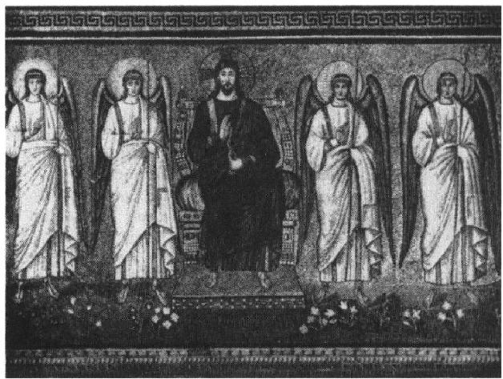
图11
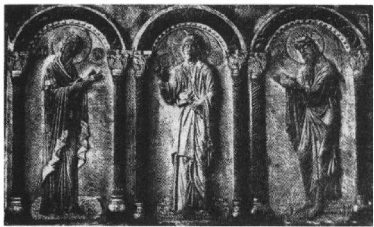
图12
在离开艺术转而讨论自然之前，先花几分钟时间考虑一下我们所谓的左右对称的数学哲学意义。从科学上讲，左和右没有内在的区别，不存在像男和女，或动物的前身和后身这样的对立性，需要人为地选择来确定哪边是左，哪边是右。但一个个体的左右确定之后，所有个体的左右也就都确定了。我需要把这点说得更清楚一些。空间中的左右讲的是旋转的方向。向左转指的是所转的方向与从脚到头的方向一起构成左手螺旋。[4]以从南极到北极的方向来考虑旋转轴时，地球的自转方向与旋转轴方向构成了左手螺旋，而以北极到南极的方向考虑旋转轴时，地球的自转则成了右手螺旋。有些晶体物质能将射进来的偏振光的偏振面向左或向右偏转，暴露了它们内在的不对称性，我们称之为旋光性。向左或向右偏转是相对于光的传播方向来说的。左右的这一特性，莱布尼茨给过一个术语，即“不可识别的”（indiscernible）。通过这些内容我们想表达的是，空间自身的结构不允许我们区分左旋和右旋，除非人为地选取。
我想把这一基础概念定义得更精确一些，因为整个相对性理论都建立在这一基础之上，而后者又是对称性的另一方面。按照欧几里得的理论，可以通过点与点之间的一些基本关系来定义空间的结构，比如A、B、C位于同一条直线上，A、B、C、D位于同一平面上，AB与CD等长，等等。或许空间结构最好的描述方式是亥姆霍兹采用的方式：只用图形全等这个概念。空间的一个映射S将其中每一点p映射为点p'：p→p'。一对映射S、S'：p→p'，p'→p，若其中一个是另一个的逆操作（即S将p映射为p'，而S'将p'映射回p，反之亦然），则称之为一对“——映射”或“——变换”。数学家把能保持空间结构的变换——如果按亥姆霍兹的方式来定义空间的结构，就意味着该变换将任意两个全等图形映射为两个全等图形——称为自同构（automorphism）。莱布尼茨认识到，这是相似性（similarity）这一几何概念的基础。自同构将一个图形映射为另一个“单独考虑的话与之无法区分”的图形（莱布尼茨语）。于是，我们说左和右实质上是相同的，指的就是：平面中的反射是一种自同构。
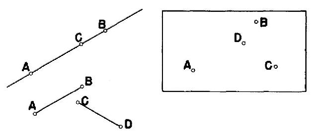
图13
这样的空间是几何所研究的空间。但空间也是所有物理现象发生的媒介。物理世界的结构由自然界的众多规律来揭示，后者由某些基本量所构成的方程来表达，而这些基本量又是时间和空间的函数。如果这些规律在反射作用下并非完全不变的话，那我们就知道空间的物理结构“带有螺旋”。马赫（Ernst Mach）曾说过，少年时代得知平行于带有电流的导线的悬挂磁针（图14）会沿一定的方向（向左或向右）偏转时大为震惊。既然包括电流以及磁针南北极在内的所有几何和物理构型从表面上看相对于通过导线和磁针的平面E都是对称的，磁针就应像处于两堆相同干草之间的布里丹之驴那样，既不向左也不向右；就好比两侧等重的等臂天平，既不左歪也不右斜，只保持水平。但是，外表有时具有欺骗性。少年马赫的困惑在于，就关于E的反射对电流以及磁针南北极产生的影响下的结论过于仓促：几何体在对称变换下的表现我们已经知道，但还需要向大自然学习物理量的表现。这就是我们的发现：在关于E的反射下，电流方向保持不变，而南北磁极互换。当然，正是因为正负磁极本质上是相等的，这一重新建立左和右的等价性的出路才可能行得通。当你发现磁针的磁性源于绕磁针方向环流的分子电流后，一切疑惑都烟消云散。显然，在关于平面E的反射下，这种电流的方向发生了改变。
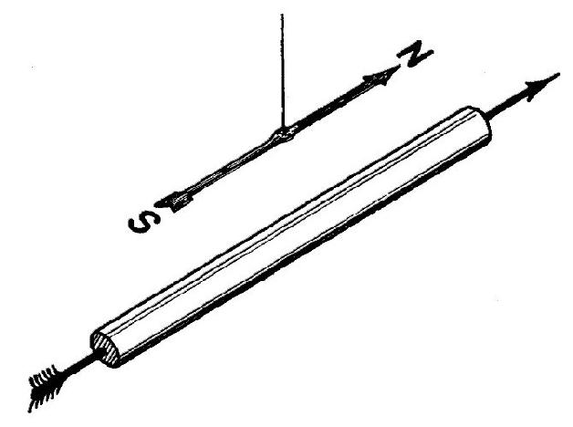
图14
结果就是：在所有的物理学中，没有任何迹象表明左和右具有内在的差异。正如空间中所有的点、所有的方向都是等价的，左和右也是等价的。位置、方向、左右都是相对的概念。就相对性的这一问题，莱布尼茨与牛顿的代言人克拉克牧师曾在一次著名的论战中用神学的语言进行了深入讨论。[5]坚信绝对空间和绝对时间的牛顿认为，运动是上帝创造万物的证明；如若不然，就无法解释物体为何不沿别的方向运动。莱布尼茨不喜欢让上帝来做出缺乏“充分理由”的决定，他说：“空间自身就是某种东西的话，就无法解释上帝为何（在保持它们彼此间距和相对位置的前提下）把万物放在这些特殊位置上而非别处；比如，上帝为何不颠倒一下东和西，把万物按相反的顺序排列？另一方面，如果空间不过是事物之间空间上的次序和关系，那么上述两种状态（真实状态，以及变换位置后的状态）就没有什么区别……所以，完全没必要问为何上帝更喜欢某一种状态。”对左和右的深入思考，让康德首次提出了直觉形式的空间和时间概念。[6]康德的理解似乎是这样的：如果上帝最初的造物行动是创造了一只左手，那么这只手即便在没有参照物的时候也具有左的特性，而这种特性只能从直觉上理解，而不能从概念上理解。莱布尼茨反驳道：“即便上帝先造一只右手，在他看来仍没有什么区别。”创世的过程只有再前进一步才会出现差异。假如上帝不是先造一只左手再造一只右手，而是先造一只右手再造一只右手，那么他只是在第二步才改变了宇宙的方案，引入了与第一步相同而不是反相的手。
科学思维站在了莱布尼茨一边。神话思维则相反，这一思维用右和左来象征善和恶这样的对立体就说明了这一点。注意到right一词本身就有“正确”和“右”两层意义你就明白了。图15展示了西斯廷教堂屋顶上米开朗琪罗的名画《上帝创造亚当》的一个细节，可见右侧的上帝是用右手触碰了亚当的左手。
人们用右手握手。拉丁语中的“左”一词为sinister（凶），而纹章学中仍用sinister side来表示盾牌的左侧。Sinistrum一词同时也指邪恶的事物，在通用英语中，这一拉丁词只有这一比喻义还在使用。[7]与耶稣一起钉死在十字架上的两个囚犯中，只有右边的那个与耶稣一起升去了天国。《马太福音》第25章这样叙述最后的审判：“他把绵羊放在右边，山羊放在左边。然后国王对右侧说道：‘来吧，天父赐福于汝，令汝等继承创世时备下的王国’……然后又向左侧说道：‘你们这些被诅咒的，离开我，跳进为魔鬼及其使从准备的永恒之火里去！’”
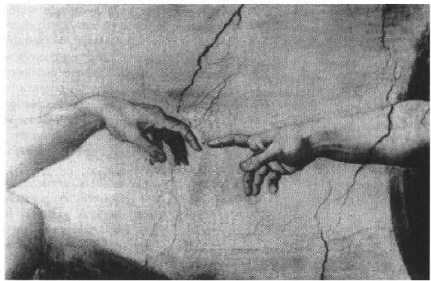
图15
我记得海因里希·沃尔夫林（Heinrich Wolfflin）在苏黎世作过一次题为“绘画中的左和右”的演讲，这篇演讲的精简版与他的另一篇论文“拉斐尔壁画中的倒置问题”一起刊载在他于1941年出版的《美术史随想录》一书中。沃尔夫林通过一些例子，比如拉斐尔的《西斯廷圣母像》和伦勃朗的蚀刻风景画《三棵树》，试图证明在绘画中右所烘托的气氛与左不同。实际上所有的（蚀刻版画）复制方法都会将左右互换，对于这种倒置，似乎现在要比过去敏感得多（就连伦勃朗也毫不犹豫地把颠倒了左右的蚀刻版画《基督落架图》推向了市场）。考虑到我们的阅读量高于古人，譬如说16世纪的人，这就意味着可以提出一个假设：沃尔夫林所指出的差别与我们从左到右的阅读习惯有关。我还记得，他不同意这一假设，也不同意人们在其演讲结束后的讨论中提出的一些心理学解释。出版的演讲全文结尾评论说这一问题“显然有其深刻的根源，深至我们的感觉本性之根”。就我个人而言，并不想太认真地考虑这个问题。[8]
科学界坚持左右等价，虽然有一些生物学事实表明，二者不等价的程度甚于震惊了年轻的马赫的磁针偏转。我们马上就要讲到这些事实。反转时间的方向就可以互换的过去和未来，以及正负电荷，也都存在同样的等价性问题。从这两个事例，特别是第二个事例可以看出，先验的证据不足以解决等价性问题，必须引入实验证据；这一点或许比左-右这一事例看得更清楚。确实，过去和未来在我们的意识中所起的作用表明，二者之间存在着内在的区别——过去可知且不可改变；而未来未知且可为现在所做的决定改变——人们理应认为，可在自然界的物理定律中找到这种区别存在的基础。但是，那些我们可以称之为确切知识的定律，在时间的反转下是不变的，跟在左右互换下的性质一样。莱布尼茨认为，表示时间的过去和未来指的是世界的因果结构，这样就把问题解释清楚了。即便量子物理学中的“波动定律”在时间反转下保持不变，因果性这一形而上学的概念，以及时间单向性，也可以通过（用概率和粒子的语言）对这些定律的统计学解释而进入物理学。当前的物理学知识让我们更无法确定正负电荷的等价性或不等价性。似乎很难总结出二者具有内在区别的物理定律；但带正电荷的质子的带负电荷的对应物还有待发现。
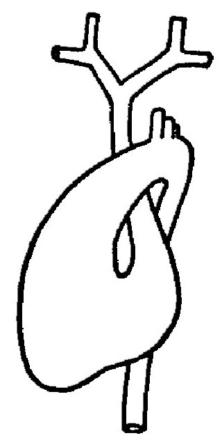
图16
这些半哲学的题外话是必要的，因为它们为讨论自然界中的左右对称性提供了背景；我们要知道，自然界的通用构造具有这种对称性。但我们也不必期望自然界的任何特殊个体具有完美的左右对称性。不过，个体的左右对称性所达到的程度还是令人震惊的。其中定有原因，而且不难寻找：平衡状态往往是对称的。更精确地说，若某些条件确定了唯一的平衡状态，则该平衡状态也具备这些条件所具备的对称性。因此，网球和星体都是球状的；如果地球不绕轴自转的话，它也会是一个球体。因为自转，地球沿轴向变扁了，但仍保持有绕轴的旋转对称性，或者说柱对称性。所以，需要解释的就不是地球的旋转对称性了，而是对旋转对称性的偏离，比如陆地和海洋的不规则分布、山脉带给球面的皱褶等等。正是由于这样的原因，路德维希（Wilhelm Ludwig）在他关于动物学中左右问题的专著中，对比棘皮动物高等的动物界里普遍存在的左右对称的起源几乎是只字未提，反而详细讨论了叠加在这一对称性基础上的种种次级非对称性。[9]这里引用他的一段话：“人体像其他脊椎动物体一样，基本上也是按左右对称生长的。出现的所有非对称性均为次级特征，其中较重要的非对称性是肠道的折叠与回盘，并对内脏产生着影响。其原因主要在于肠道需要增加的表面积与身体的成长不成比例。而且，在种系发育过程中，与肠道系统及附属器官有关的非对称性最先出现，然后又带来了其他器官系统的非对称性。”大家都知道，哺乳动物的心脏是非对称螺旋体，如示意图16所示。
假如大自然普遍都遵循法则，那么所有的自然现象就都将具有由相对性理论所概括的普适定律的完全对称性。不过事实并非如此，这就证明了偶然性（contingency）是世界的一个基本特性。克拉克在与莱布尼茨的论战中承认了后者的充分理由原则，但加了一句：充分理由往往出于上帝的意志。我认为，这里唯理主义者莱布尼茨肯定错了，而克拉克是对的。但是，与其让上帝对世界上所有的不合理之处负责，全然否定充分理由原则更显真诚。另一方面，莱布尼茨对相对性原理的理解是对的，牛顿和克拉克则不然。今天我们看到的真实是：自然界的法则并不唯一地决定这个世界，哪怕我们把通过自同构变换（即普遍自然规律保持不变的变换）产生于彼此的两个世界视为同一个。
对于一团物质来说，如果自然法则所赋予的整体对称性只受其位置P所限制，那么它将呈球形，球心为点P。因此，那些最低等的动物，即水中的小悬浮生物，大体上呈球形。而对于附着在海床上的生物来说，重力的方向就成了一个重要因素，因此，相对于球心P的完全对称降级为绕轴完全对称。但是，对于那些能够在水里、空中或地面上自主运动的动物来说，身体从后向前移动的方向和重力的方向都具有决定性的影响。在前后轴、背腹轴和由此而来的左右轴决定了以后，只剩下左和右还可以任意指定，而且在这一阶段也不会有比左右型更高级的对称性。系统发育进化中，那些会在左与右之间引入可遗传差别的因素，很可能为运动器官（纤毛、肌肉以及肢翼）的左右对称结构带给动物的好处所抑制：如果这些器官的进化是不对称的，自然而然的结果就是动物的运动是螺旋状的而非直线式的。这可能也有助于解释我们的四肢为何比内脏更严格地遵守对称性定律。在柏拉图的《会饮篇》（Symposium）一书中，阿里斯托芬（Aristophanes）讲了一个故事，描述了从球对称到左右对称是如何产生的。他说，起先人类是球形的，背部和各侧面构成一个球面。为了打击人类的自大，削弱人类的能力，宙斯将他们一剖为二，并让阿波罗把他们的脸和生殖器转到前面去；宙斯还威胁说：“如果他们继续傲慢无礼，我就再次把他们劈开，这样他们就只能一条腿跳着走。”
无机界中晶体具有最为惊人的对称性。气态和晶态是泾渭分明的两种状态，用物理原理来解释它们相对比较容易，而介于这两个极端之间的状态，比如液态和塑态（plastic states），用理论来解释就没那么容易。对于气态来说，分子在空间中自由运动，位置和速度相互独立且无序；而对于晶态来说，原子在平衡位置附近振动，就好像彼此由弹簧连接在一起，这些平衡位置在空间中形成了一个规则构型。我们将在后一讲中解释这里的“规则”指的是什么，以及规则原子排列如何造就了晶体的可见对称性。从几何构型上讲可能存在的32种晶体对称性中，虽然大多数都涉及左右对称性，但并非全部。不涉及左右对称性的晶体有可能是对映晶体（enantiomorph crystals），它们以左旋形式（laevo-form）或右旋形式（dextro-form）存在，两种形式互为镜像，就像左手和右手一样。具有旋光性，即可把光的偏振面向左或向右旋转的物质，往往是具有这种非对称性的晶体。如果自然界中存在左旋形式的某种物质，那么其右旋形式也应该存在。而且平均来说，两者出现的概率也是一样的。1848年，巴斯德（Pasteur）发现无旋光性的外消旋酸钠铵盐水溶液遇低温再结晶时，结晶物就是由两种互为镜像的细微晶体组成的。巴斯德仔细地把它们分离开来，并且证明了由它们制备的两种酸与外消旋酸具有同样的化学成分，只是其中一种是左旋光的，另一种是右旋光的。巴斯德又发现右旋光酸与葡萄发酵时所产生的酒石酸完全相同，而左旋光酸之前在自然界中从未被发现过。耶格（F.M.Jaeger）在题为“关于对称性原理及其在自然科学中的应用”的演讲中说：“没有比巴斯德这一发现影响更为深远的科学发现了。”
很显然，一些难以控制的偶然因素决定了溶液中某处析出的是左旋晶体还是右旋晶体；因此，在结晶过程中的任意时刻，析出的左旋晶体和右旋晶体的量相等或非常接近相等，这样才能与整个溶液的对称性和无旋光性相符，且不违背随机定律（the law of chance）。另外，大自然虽赐予了人类大为诺亚（Noah）所欣赏的奇妙礼物——葡萄，但葡萄所产生的酒石酸却只有一种旋光性，而具有另一种旋光性的酒石酸还有待巴斯德去发现！这确实很奇怪。事实上，自然界为数众多的含碳化合物中，大多数都只有一种旋光性（左旋或右旋）。蜗牛壳的回旋方向是一种可遗传的特征，由其基因决定，人类的左侧心脏以及肠道的回盘方向也一样。也有可能出现例外，比如人的肠道逆位（situs inversus）出现的概率为0.02%；后面我们还要讲到这一点！深层次的化学构成表明，人体也存在一种螺旋，所有人的旋绕方向都相同。这就导致了人体含有右旋形式的葡萄糖以及左旋形式的果糖。基因上的这种非对称性有一个可怕的结果，即摄入少量左旋苯基丙氨酸后就会出现一种被称为苯丙酮尿症的代谢病症状，并导致精神病，而摄入右旋苯基丙氨酸没有这种后果。巴斯德之所以能够利用细菌、霉菌、酵母及其他微生物分离出左旋物质或右旋物质，就是因为这些生物体具有非对称的化学构成。正因为这一点，他才发现，如果灰绿青霉在某种本无旋光性的葡萄酸盐溶液中生长的话，该溶液就会逐渐呈现左旋光性。显然，灰绿青霉选择了最适合其非对称化学结构的那种酒石酸分子作为食物。人们用锁和钥匙的关系来比喻生物体的这种特异性。
考虑到上述事实，以及仅通过化学方法把无旋光性物质旋光化的所有尝试均告失败，[10]巴斯德坚称产生单旋光性物质是生命体的特权也就不难理解了。巴斯德在1860年写道：“这也许是眼下在无生命体和有生命体的化学物质间所能划出的唯一一条明确的分界线。”巴斯德试图解释他最初的那个实验：在置于空气中的中性溶液里，由于细菌的作用，葡萄酸经由再结晶过程转化为左旋酒石酸和右旋酒石酸的混合物。今天看来，他无疑错了！正确的物理解释是，低温下旋光性相反的两种酒石酸的混合物要比无旋光性的形式更为稳定。如果在生命体和无生命体之间存在一个原则性的区别，那么这一区别并不是二者物质基础的化学特征不同。自1828年维勒（Wöhler）用无机物质合成尿素以来，这点已是确信无疑了。但甚至到了1898年，雅普（F.R.Japp）在不列颠科学促进会（the British Association）上所作的题为“立体化学和活力论”的著名讲演中还持有巴斯德的观点，只是换了个说法：“只有有生命的有机体，或者具有对称性概念的智慧才能产生这种结果（即不对称化合物）。”这里他说的是否就是巴斯德的智慧？即设计实验，出乎意料地创造出双旋光性酒石酸晶体的智慧？雅普继续道：“只有非对称性才能产生非对称性。”我乐于承认这一论点；但它的作用很有限，因为现实世界中，决定了未来的过去和现在，除去人为因素，是不存在对称性的。
然而，这就提出了一个难题：对映体（enantiomorphic）有很多对，为什么对于某一对来说大自然只产生其中的一种，而且还往往由生命体产生？约尔当（Pascual Jordan）用这一事实来支持他的下述观点：并不是世界发展到某一阶段后，各地持续不断发生的偶然导致了生命的出现，而是某个非常独特且发生概率很低的事件触发了生命的诞生；这事件只发生了一次，却通过自催化增殖开启了一场雪崩。的确，如果植物和动物体上的非对称蛋白质分子有不同时间不同地点的非相关起源，那它们的左旋态和右旋态应该有近似相同的丰度。这样看来，亚当夏娃的传说似乎存在一定的真实性，即便不适用于人类的起源，也适用于原始生命的起源。前面我所说的就是这些生物学事实。它们从表面上看意味着左和右存在内在的差异（至少在有机世界是这样的），不过我们可以肯定的是，问题的答案并不在于任何普适的生物学定律，而在于生命发端的偶然事件。约尔当指出了一条出路；人们还希望能有一个不那么彻底的答案，比如把地球上的栖居者的非对称性归因于地球自身某种偶然但内在的非对称性，或者地球接收的阳光所具有的非对称性。但这个问题，和地球的自转、地球和太阳共同产生的磁场都没有直接关系。还有一种可能，就是生命进化发端于平衡的对映体分布，但这种平衡是不稳定的，很小的扰动就会将其打破。
有关左和右的系统发生问题（phylogenetic problems）就先讨论到这里，接下来我们将讨论生命的个体发生（ontogenesis）。这就引出了两个问题：第一，是否动物受精卵在第一次分裂时就确定了正中面（the median plane），然后一个细胞发育成左半部分，另一个细胞发育成右半部分？第二，是什么确定了第一次分裂的正中面？现在来讨论第二个问题。比原生动物高等的任何动物的卵细胞从一开始就有一个极轴，连接未来会发展为动物的动物极和会发展为囊胚的植物极（营养极）。该极轴与精子进入卵子的那一点构成了一个平面，我们很自然地就会认为这个面就是受精卵的第一次分裂面。的确，事实证明，对于很多动物来说确实是这样。现在的观点似乎更倾向于认为，是外界因素把基因中蕴含的可能性变成了现实，导致了初始极性和随之而来的左右对称性。对于很多动物来说，极轴的方向显然由卵母细胞附着在卵巢内壁上的方式决定，而精子进入卵子的那一点，如前所述，是正中面的决定因素之一，通常还是最重要的决定因素。不过还有其他因素在影响着极轴的方向和正中面。对于墨角藻（Fucus）来说，光线、电场或化合物梯度决定了极轴方向，而对于某些昆虫或头足类动物来说，在卵巢的影响下，正中面早在受精之前就确定了。[11]一些生物学家试图从深层次的结构中探寻这些影响因素发挥作用的机理，不过关于这些结构我们还没有清晰的概念。康克林（Conklin）认为是海绵质结构，还有人认为是细胞骨架，现在生物化学家倾向于认为应该把结构特性具体到纤维上来，这种倾向很强烈。李约瑟在主题为“秩序和生命”（1936年）的特里讲座中就宣称，生物学很大程度上是关于纤维的学问，或许你会发现，卵子的深层结构是由细长的蛋白质分子和液态晶体构成的。
关于第一个问题，即细胞的第一次有丝分裂是否把细胞分成左右两部分，我们了解得更多一些。根据左右对称性的基本特点，作此假设似乎是理所当然。不过，答案还需要事实证据。尽管这一假设对于正常发育来说应该是正确的，但从汉斯·杜里舒（Hans Driesch）最先对海胆所做的实验可知，在双细胞阶段将单个卵裂球与同伴分离开来后，该卵裂球又发育成一个完整的胚囊，与正常发育的胚囊相比只是形体较小而已。请看杜里舒著名的照片（图17）。我们必须承认，并不是所有的物种都这样。杜里舒的发现让人们认识到，卵细胞不同部分的实际发育功能和潜在的发育功能之间存在着区别。杜里舒称之为预期发育前景（prospective significance），有别于预定潜能（prospectivepotency）；后者的意义更广泛，但随着社会的发展，其含义在收缩。让我通过两栖动物肢芽的确定来说明这一基本要点。哈里森（R.G.Harrison）曾做过实验，把将来会发育成肢体的芽体外壁层盘做了移植，发现尽管移植有可能颠倒背腹轴和中侧轴，但前后轴是确定的；所以在这一时期，左和右仍属于外壁层盘的预定潜能，这一潜能最终如何实现则受周围组织的影响。
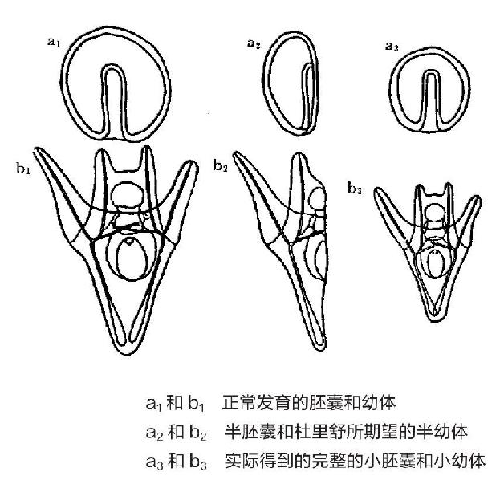
图17海胆的多潜能实验
杜里舒对正常发育的深度破坏证明了第一次细饱分裂可能并没有永久地把正在发育的生物体的左和右确定下来。但即便在正常发育中，第一次分裂的中心面也可能并不是正中面。有人曾深入研究了马蛔虫（部分神经系统是不对称的）细胞分裂的初期阶段。首先，受精卵分裂成细胞I和另一个更小的细胞P（图18），二者具有明显区别。然后二者沿两个相互垂直的平面分别分裂为I'+I''和P1+P2。继而，P1+P2构成的柄发生转向，使得P2与I'或与I''相接触；记与P2相接触的为B，另一个为A。现在整体呈长斜方形，大致上AP2就是前后轴，BP1是背腹轴。再下一次分裂沿着与A和B接触面相垂直的面进行，把A分裂成a+α，把B分裂成b+β，这才决定了左和右。这一构型再有一丁点的改变就会破坏这种左右对称性。这就提出了一个问题：先确定了前后又确定了左右的这两个连续动作是偶然事件呢，还是说卵细胞在单细胞阶段就含有特别因素确定了这两个动作的方向？对于蛔虫属来说，支持后一种说法的镶嵌卵假说似乎更恰当。
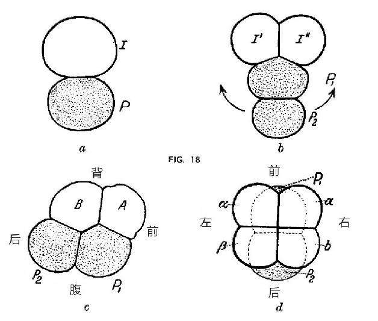
图18
我们已经知道有多种基因型反转（genotypical inversion），即两物种的基因构型的关系犹如对映晶体的原子构型。不过，更为常见的是表型反转（phenotypical inversion）。左撇子就是其中一例。我们再来举一个更有趣的例子。属于甲壳纲的几种龙虾具有两个形态和功能都不同的螯，一个较大（A），一个较小（a）。假设对于正常发育的个体来说，右边的螯为A。如果我们切除幼体右边的螯，就会出现反向再生（inversive regeneration）：左边的螯发育成较大的形态A，而右边螯的位置上会再生出一个a形态的小螯。由此及类似的情况可以看出原生质的两性潜势（bipotentiality），即具有某种非对称性特征潜能且具有繁殖能力的所有组织都有实现两种形态的潜力；不过正常发育时总是只发育一种形态，或左或右。究竟发育成哪种形态由基因决定，但反常的外部环境会导致反转。在反向再生这一奇特现象的基础上，路德维希提出了下列假说：不对称性中的决定因素可能并不是像发育成“A型右螯”这样的特定潜能，而是在生物体中沿某种梯度分布的R和L（右和左）的两种动因，其中一种的浓度从右到左逐渐降低，另一种的浓度梯度则相反。这里的关键点是，不只存在一个梯度场，而是有两个相反的梯度场R和L。基因决定了哪个梯度场的强度更大。但是，如果占优势的动因遭到破坏，那么先前受到抑制的另一动因就变成主要动因，于是就发生反转。这里，我以数学家而非生物学家的身份极其谨慎地讨论上述内容；在我看来，这些内容纯属假说。但是，左和右的差别显然与生物体的系统发育以及个体发育最深层次的问题有关。